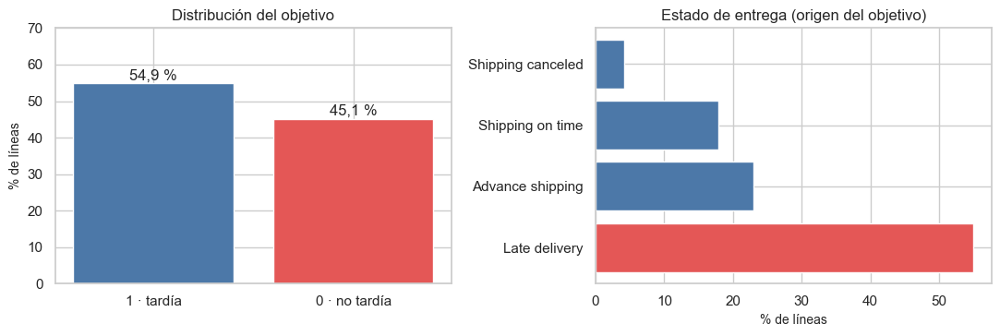
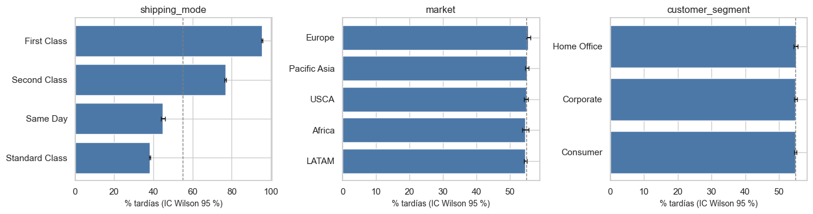
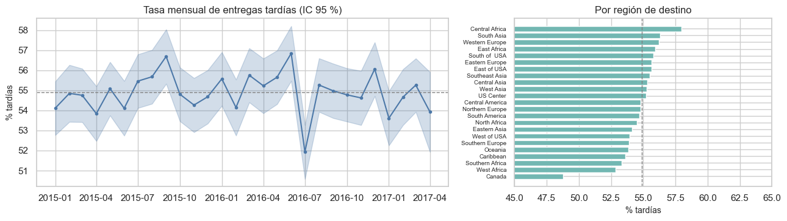

3. Análisis de la variable objetivo (2.1)#
Frecuencia de cada clase, grado de desbalance, casos de la clase minoritaria, comportamiento en el tiempo y en el espacio, y consecuencias para la métrica y la validación. Solo entrenamiento.
from pathlib import Path
import re, sys, warnings
import numpy as np
import pandas as pd
import matplotlib.pyplot as plt
import seaborn as sns
from IPython.display import Markdown, display
project_root = Path.cwd().resolve()
while not (project_root / "_config.yml").exists():
if project_root.parent == project_root:
raise FileNotFoundError("No se encontró _config.yml. Ejecuta el notebook dentro de la carpeta del libro.")
project_root = project_root.parent
if str(project_root) not in sys.path:
sys.path.insert(0, str(project_root))
for _folder in ("tables", "figures"): # se crean si no existen
(project_root / _folder).mkdir(exist_ok=True)
from src.project_utils import *
configure_plots()
pd.set_option("display.max_columns", 80)
pd.set_option("display.width", 170)
pd.set_option("display.max_colwidth", 70)
TABLES = project_root / "tables"
def md_out(text):
display(Markdown(text))
train = load_train()
y = train[TARGET]
dist = (y.value_counts().rename_axis("clase").to_frame("líneas")
.assign(**{"%": lambda d: 100 * d["líneas"] / d["líneas"].sum()}))
por_pedido = train.groupby(ORDER_COL)[TARGET].first().value_counts()
dist["pedidos"] = por_pedido.reindex(dist.index).to_numpy()
dist["% pedidos"] = 100 * dist["pedidos"] / dist["pedidos"].sum()
dist.index = dist.index.map({0: "0 · no tardía", 1: "1 · tardía"})
dist.to_csv(TABLES / "objetivo_distribucion.csv")
display(dist.round(2))
ratio = dist["líneas"].max() / dist["líneas"].min()
md_out(f"- Razón de desbalance (mayoritaria/minoritaria): **{es(ratio, 2)}**.\n"
f"- Clase minoritaria: **0 (no tardía)** con {es(int(dist['líneas'].min()), 0)} líneas y {es(int(dist['pedidos'].min()), 0)} pedidos. "
f"A nivel de pedido la proporción es prácticamente la misma ({es(dist['% pedidos'].max() / 100, 1, pct=True)} tardíos), así que el tamaño del pedido no se asocia con la etiqueta.\n"
f"- Una regla trivial que siempre predice «tardía» acierta {es(y.mean(), 1, pct=True)}: ese es el piso de accuracy que el modelo debe superar.")
origen = pd.crosstab(train["delivery_status"], y, margins=True)
display(origen)
fig, axes = plt.subplots(1, 2, figsize=(11, 3.8))
axes[0].bar(dist.index, dist["%"], color=["#4c78a8", "#e45756"])
for i, v in enumerate(dist["%"]):
axes[0].text(i, v + 1, es(v / 100, 1, pct=True), ha="center")
axes[0].set_ylabel("% de líneas"); axes[0].set_title("Distribución del objetivo"); axes[0].set_ylim(0, 70)
ds = train["delivery_status"].value_counts(normalize=True) * 100
axes[1].barh(ds.index, ds.values, color=["#e45756" if s == "Late delivery" else "#4c78a8" for s in ds.index])
axes[1].set_xlabel("% de líneas"); axes[1].set_title("Estado de entrega (origen del objetivo)")
plt.tight_layout(); save_figure(fig, "03_distribucion_objetivo.png"); plt.show()
| líneas | % | pedidos | % pedidos | |
|---|---|---|---|---|
| clase | ||||
| 1 · tardía | 78549 | 54.9 | 26164 | 54.83 |
| 0 · no tardía | 64526 | 45.1 | 21555 | 45.17 |
Razón de desbalance (mayoritaria/minoritaria): 1,22.
Clase minoritaria: 0 (no tardía) con 64.526 líneas y 21.555 pedidos. A nivel de pedido la proporción es prácticamente la misma (54,8 % tardíos), así que el tamaño del pedido no se asocia con la etiqueta.
Una regla trivial que siempre predice «tardía» acierta 54,9 %: ese es el piso de accuracy que el modelo debe superar.
| late_delivery_risk | 0 | 1 | All |
|---|---|---|---|
| delivery_status | |||
| Advance shipping | 32954 | 0 | 32954 |
| Late delivery | 0 | 78549 | 78549 |
| Shipping canceled | 6032 | 0 | 6032 |
| Shipping on time | 25540 | 0 | 25540 |
| All | 64526 | 78549 | 143075 |

Interpretación. El objetivo es binario y moderadamente balanceado
(≈ 55 % tardías). La etiqueta proviene de delivery_status: «Late delivery» → 1;
«Advance shipping», «Shipping on time» y «Shipping canceled» → 0. La clase 0 mezcla
dos situaciones distintas: entregas puntuales y pedidos que nunca se
entregaron (cancelados o sospechosos de fraude); esto se resuelve en el capítulo 9.
Relación con las predictoras principales#
Vista rápida de la tasa de entregas tardías por las categóricas con más señal (el análisis completo, con pruebas y tamaños de efecto, está en el capítulo 5).
fig, axes = plt.subplots(1, 3, figsize=(14, 3.8))
for ax, col in zip(axes, ["shipping_mode", "market", "customer_segment"]):
t = rate_table(train[col], y).sort_values("tasa")
ax.barh(t["categoria"], 100 * t["tasa"], xerr=[100 * (t["tasa"] - t["ic_inf"]), 100 * (t["ic_sup"] - t["tasa"])],
color="#4c78a8", capsize=3)
ax.axvline(100 * y.mean(), color="gray", ls="--", lw=1)
ax.set_title(col); ax.set_xlabel("% tardías (IC Wilson 95 %)")
plt.tight_layout(); save_figure(fig, "03_objetivo_por_categoria.png"); plt.show()

Interpretación. El modo de envío domina: First Class llega tarde en ≈ 95 % de los casos y Standard Class en ≈ 38 %. En cambio, mercado y segmento de cliente apenas mueven la tasa (diferencias < 1 punto). Es la primera señal de que el problema sin fuga tiene una predictora fuerte y mucho ruido.
Comportamiento en el tiempo y en el espacio#
mensual = train.groupby(train[DATE_COL].dt.to_period("M"))[TARGET].agg(["sum", "count"])
lo, hi = wilson_interval(mensual["sum"], mensual["count"])
mensual["tasa"] = mensual["sum"] / mensual["count"]
x = mensual.index.to_timestamp()
fig, axes = plt.subplots(1, 2, figsize=(13, 3.8), gridspec_kw={"width_ratios": [1.6, 1]})
axes[0].fill_between(x, 100 * lo, 100 * hi, alpha=0.25, color="#4c78a8")
axes[0].plot(x, 100 * mensual["tasa"], marker="o", ms=3, color="#4c78a8")
axes[0].axhline(100 * y.mean(), color="gray", ls="--", lw=1)
axes[0].set_ylabel("% tardías"); axes[0].set_title("Tasa mensual de entregas tardías (IC 95 %)")
reg = rate_table(train["order_region"], y).sort_values("tasa")
axes[1].barh(reg["categoria"], 100 * reg["tasa"], color="#72b7b2")
axes[1].axvline(100 * y.mean(), color="gray", ls="--", lw=1)
axes[1].set_xlim(45, 65); axes[1].set_xlabel("% tardías"); axes[1].set_title("Por región de destino")
axes[1].tick_params(axis="y", labelsize=7)
plt.tight_layout(); save_figure(fig, "03_objetivo_tiempo_espacio.png"); plt.show()
md_out(f"Tasa mensual entre **{es(mensual['tasa'].min(), 1, pct=True)}** y **{es(mensual['tasa'].max(), 1, pct=True)}**; "
f"por región de destino entre **{es(reg['tasa'].min(), 1, pct=True)}** y **{es(reg['tasa'].max(), 1, pct=True)}**.")

Tasa mensual entre 51,9 % y 56,8 %; por región de destino entre 48,8 % y 58,0 %.
Interpretación. La tasa es estable en el tiempo (fluctúa dentro de los intervalos de confianza alrededor del 55 %) y casi homogénea entre regiones. Los capítulos 7 y 8 lo comprueban formalmente (estacionariedad, autocorrelación temporal y espacial).
Implicaciones para la métrica y la validación#
Métrica: con clases cercanas a 55/45, accuracy no es engañosa, pero depende del umbral. Se usa ROC-AUC como métrica principal porque mide la capacidad de ordenar pedidos por riesgo (el uso previsto) y es independiente del umbral y de la prevalencia. Se complementa con Average Precision, F1, recall, precisión, matriz de confusión, Brier y calibración.
Línea base:
DummyClassifier(prior) tiene ROC-AUC = 0,5 y accuracy ≈ 55 %.Validación: estratificar no es necesario (prevalencia estable), pero sí respetar el tiempo (cronológica con gap) y los pedidos (no separar líneas de un mismo pedido; bootstrap por pedido).